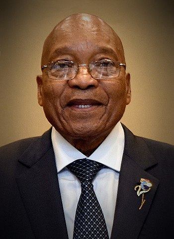
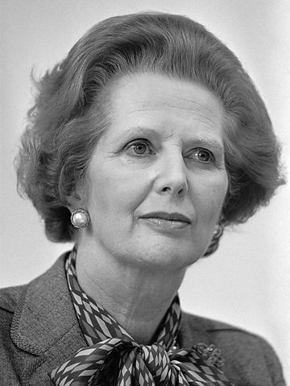

Zgadnij kim jest ta postać
Pytanie 1 z 8

Wskazówka: nie lubił wyspy Świętej Heleny.
- Napoleon I
- Aleksander I Romanow
- George Washington
Napoleon I
Jeden z najwybitniejszych dowódców wojskowych w historii. Zwyczęca wielu bitw, rządził Francją przez ponad piętnaście lat.
Pytanie 2 z 8
.jpg)
Wskazówka: miał bardziej znanego kolegę.
- Otto von Bismarck
- Georges Clemenceau
- Friedrich Engels
Friedrich Engels
Filozof i ideolog komunistyczny. Jeden z wspołtwórców komunizmu.
Pytanie 3 z 8

Wskazówka: zjednoczył swój naród.
- Czyngis-chan
- Tamerlan
- Jumong
Czyngis-chan
Wielki zdobywca, twórca jednego z największych imperiów.
Pytanie 4 z 8
Wskazówka: miał sześć żon.
- Jacob Zuma
- Jean-Bedel Bokassa
- Robert Mugabe
Jacob Zuma
Był prezydentem republiki połódniowej Afryki.
Pytanie 5 z 8

Wskazówka: załoźył imperium.
- Fryderyk II Hohenstauf
- Karol Wielki
- Pepin Krótki
Karol Wielki
Twórca Świętego Cesarstwa Rzymskiego, jeden z najwybitniejszych władców w dziejach średniowiecznej Europy.
Pytanie 6 z 8

Wskazówka: podbił Persję.
- Filip II Macedoński
- Leonidas I
- Aleksander Macedoński
Aleksander Macedoński
Jeden z największych wodzów i zdobywców w starożytności.
Pytanie 7 z 8
Wskazówka: nazywano ją 'Żelazną Damą'.
- Eva Peron
- Margaret Thatcher
- Wilhelmina
Margaret Thatcher
Pierwsza kobieta premier w Wielkiej Brytanii.
Pytanie 8 z 8

Wskazówka: był działaczem komunistycznym.
- Josip Broz Tito
- Benito Mussolini
- Konrad Adenauer
Josip Broz Tito
Przywódca antyniemieckiej partyzantki, rządził Jugosławią.